Un lanzador todo en uno para jugar Java, Bedrock, Dungeons y Legends — con cuentas offline, skins y capas en 3D, soporte para mods y modpacks, y pantallas de carga animadas aleatorias.
EL LAUNCHER
Un launcher de escritorio (Windows completo; Linux y Mac en modo experimental) que reúne todas las ediciones de Minecraft en una sola app, con el mismo aspecto limpio y pixelado del juego.
Abre Java con selector de versión al lado del botón de jugar, inicia Bedrock detectando la versión real instalada, y entra a Dungeons y Legends sin salir del launcher.
Inicia sesión con cuentas offline, administra varias con un clic y personaliza cada instalación con más de 130 iconos.
Las secciones de Novedades, Realms y Marketplace se conectan en vivo con minecraft.net, así siempre ves lo último.
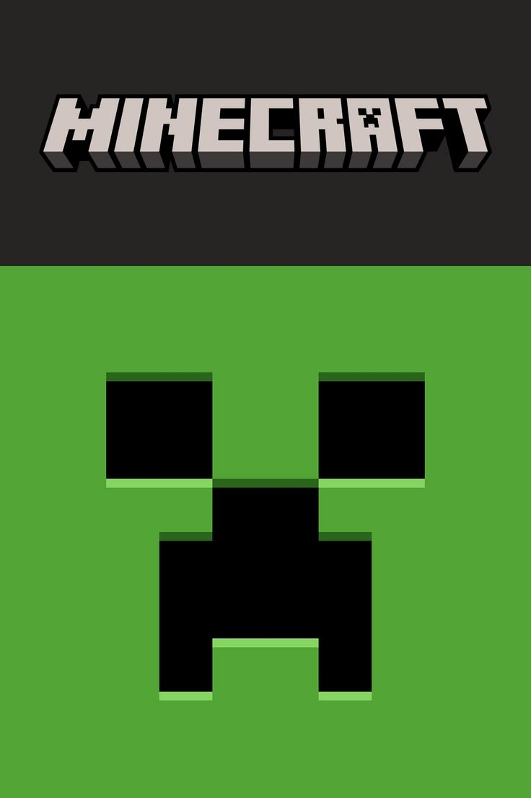
CUATRO MUNDOS
Cada juego con su propia pantalla, su arte y su botón listo para jugar o comprar.

Lanza desde .minecraft con selector de versión y soporte para Fabric, Quilt y Forge.

Detecta la versión real instalada y abre la app directamente, con Marketplace y Realms integrados.

Aventura de acción en mazmorras. Mira el catálogo de DLC en vivo y entra a la batalla.

Estrategia épica en tiempo real. Defiende el Mundo Principal en batallas masivas.
CARACTERÍSTICAS
Pensado para que tengas control total sin complicaciones.
Java, Bedrock, Dungeons, Dungeons II y Legends en un solo lugar. Bedrock se detecta y se abre solo.
Entra sin complicaciones y cambia entre varias cuentas con un clic.
Mira tu skin en 3D, añade skins y guarda todas las capas que quieras.
Cada instalación con loader tiene su propia carpeta de mods y configuración.
Descarga mods y modpacks dentro del launcher, filtrados por tu versión.
Novedades, Realms y Marketplace conectados con minecraft.net en tiempo real.
Progreso claro con MB descargados, porcentaje y botón para cancelar.
Más de 130 iconos para personalizar cada instalación.
TOUR DEL LAUNCHER
Un recorrido por cada parte de Minecraft Launcher GHB, de arriba a abajo del menú lateral: qué es, qué hace y cómo se usa.
HOME
El icono de Home es el bloque de césped de Java. Arriba tienes el botón QUICK PLAY, grande y centrado: viene con Java activo y lanza la instalación que elijas con un clic.
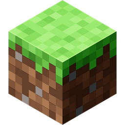
HOME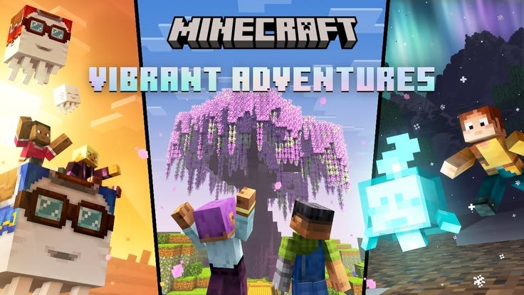
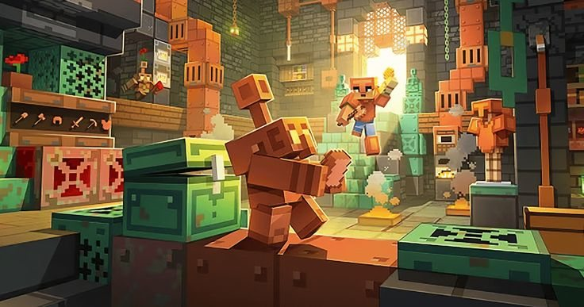
JAVA EDITION
Pestañas: Play, Installations, Realms, Skins y Patch Notes. Al lado del botón Play eliges la versión (Release o Snapshot) y su loader.
.minecraft sin tocar la descarga oficial de Mojang.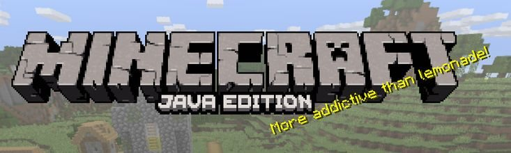
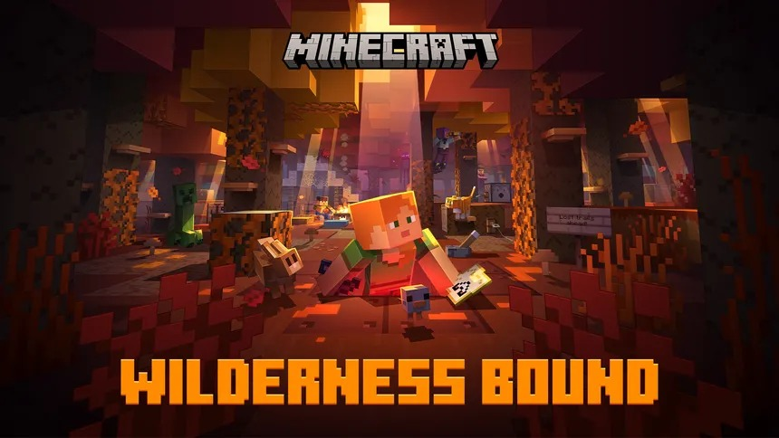
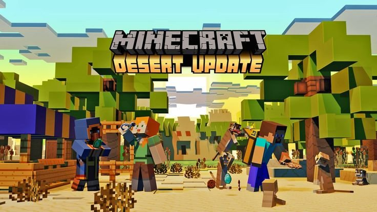
BEDROCK EDITION
No busca carpetas: detecta el Bedrock instalado en Windows y lo abre directo con su identificador real, mostrando su versión junto al botón Play.
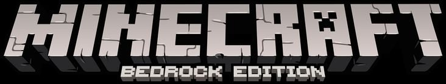
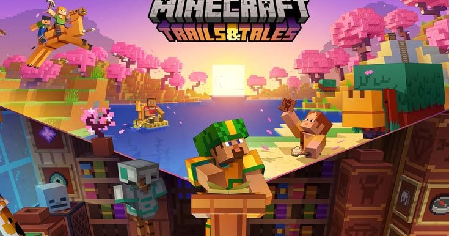
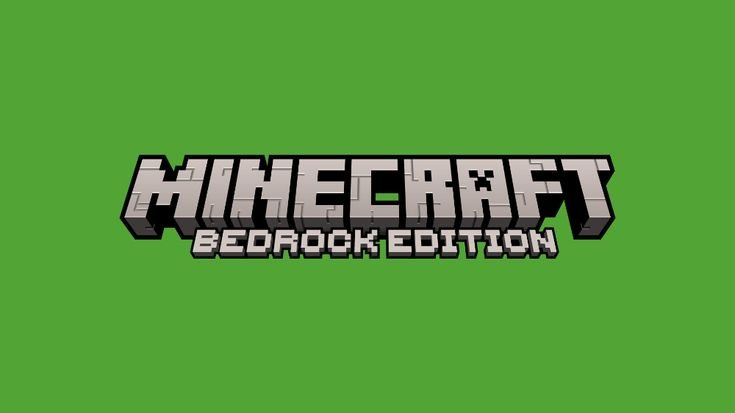
DUNGEONS II
La nueva aventura de mazmorras. Su icono en el menú lateral tiene auroras y estrellas animadas. Se detecta con Windows y se lanza desde su paquete.
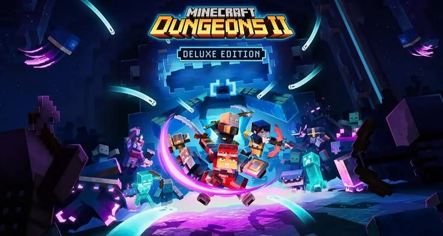
DUNGEONS
El clásico de acción en mazmorras, con su propia pantalla, su arte y su botón de jugar o comprar.
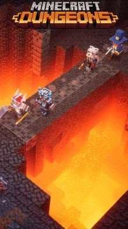
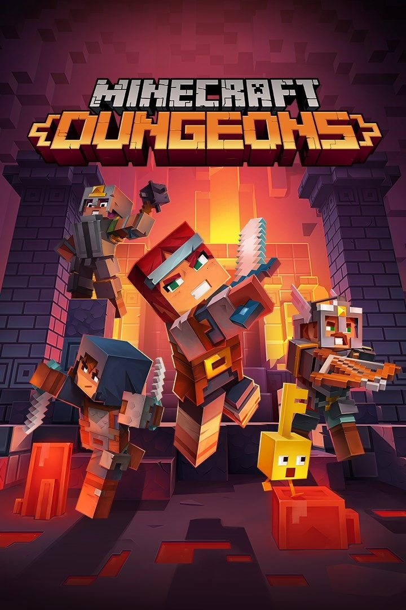
LEGENDS
Estrategia en tiempo real para defender el Mundo Principal. Entra desde el launcher sin buscar el acceso directo.
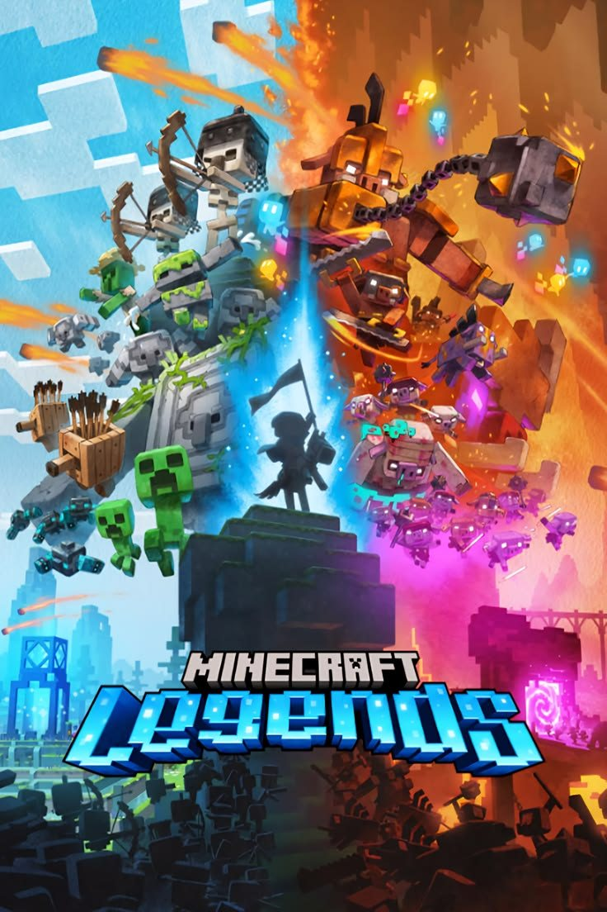
VESTIDOR
Tu skin se ve en 3D (de pie y caminando) y la capa se ve en su espalda. Sin skin elegida, se muestra Steve. El juego también carga tu skin y capa gracias al servidor local.
Skins incluidas: Steve, Blue RGB y Pink Pants.


Texturas de las skins incluidas: Blue RGB y Pink Pants
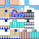
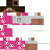
WHAT'S NEW
Cinco pestañas: Launcher, Novedades, Realms, Marketplace y Creator, con artículos reales y en vivo de minecraft.net y Mojang.
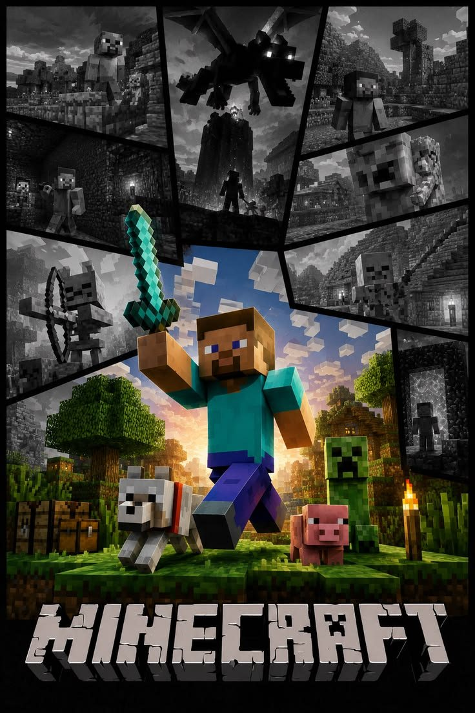
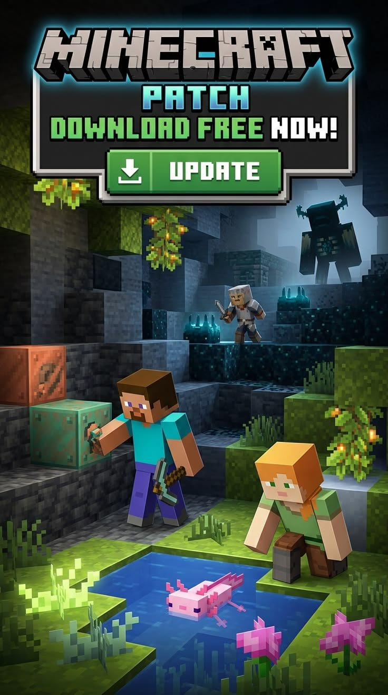
SETTINGS
Elige una pestaña para ver qué hace cada una.
.mrpack: crean una instalación nueva e independiente..zip: instalación nueva con su loader, mods y config.INSTALACIONES
Crear una instalación ahora tiene más de 130 iconos nuevos, nítidos y sin bordes blancos, y una sección Loader al final.
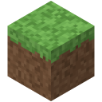
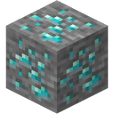
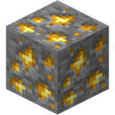
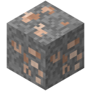
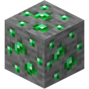
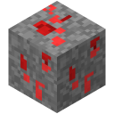
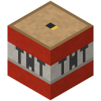
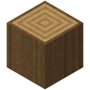
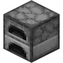
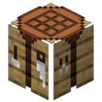
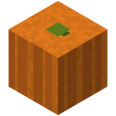
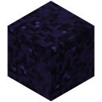
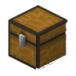
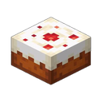
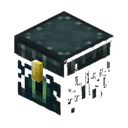
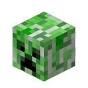
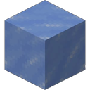
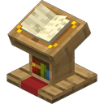
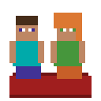
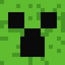
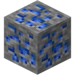
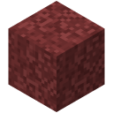
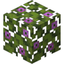
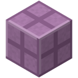
MARKETPLACE
El catálogo oficial de minecraft.net dentro del launcher: add-ons, mundos y packs de skins, con la entrada Enter the Marketplace.
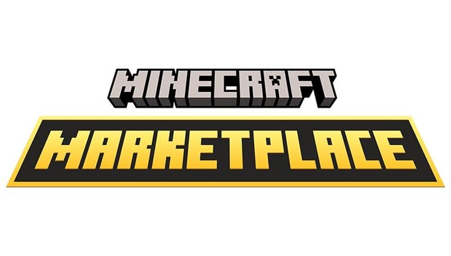
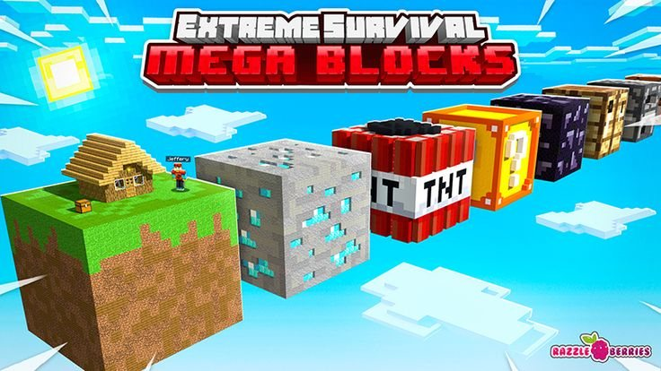
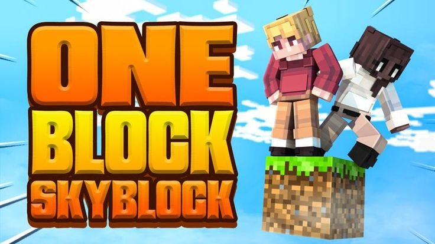
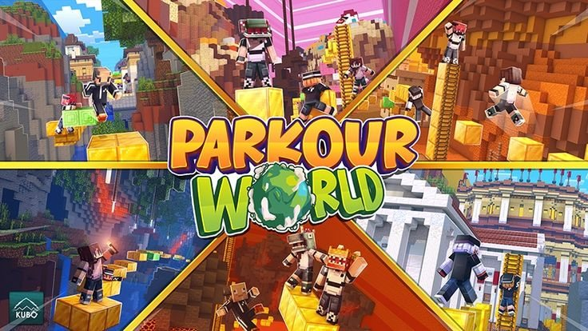
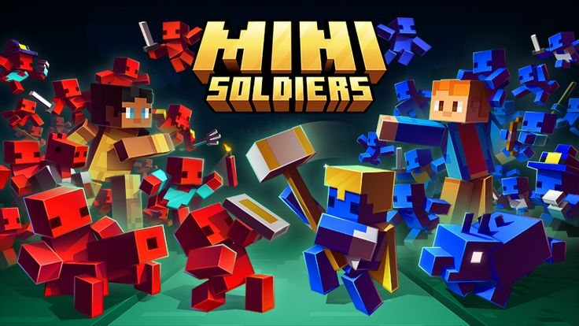
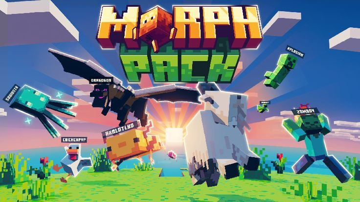
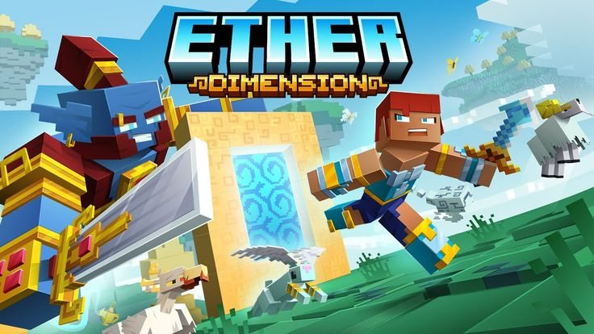
REALMS
Información y acceso a Realms conectado en vivo a minecraft.net, también como pestaña en What's New.
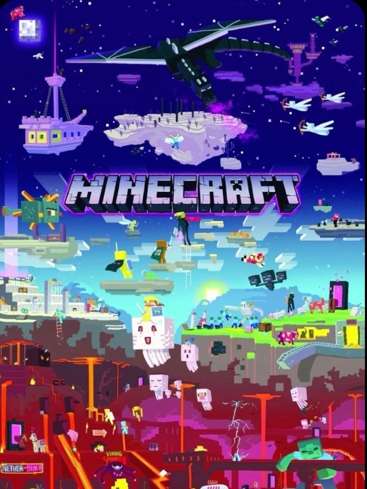
PATCH NOTES
Las notas de cada versión de Java y Bedrock sin salir del launcher.
CUENTAS
Entra con una cuenta offline: solo escribe un nombre y elige un avatar. Puedes tener varias y cambiar con un clic.
online-mode=true.DESCARGAR
Versión v1.0.8. Elige tu sistema.
Todo funciona: Java, Bedrock, Dungeons, Dungeons II y Legends.
Descargar .exe Portable · doble clic, sin instalarDescargar .zip Código fuente + compiladorSolo Java Edition, skins, capas y mods. Bedrock, Dungeons y Legends existen solo en Windows.
Descargar .zip Se ejecuta con Node.jsIgual que Linux: solo Java Edition, skins, capas y mods.
Descargar .zip Se ejecuta con Node.js¿Problemas con la descarga? Visita la página de releases en GitHub.
GUÍA
Dos formas en Windows (.exe o .zip) y una para Linux y Mac.
MinecraftLauncher.exe. Es portable: no instala nada y abre directo.crear.windows.exe.bat: compila el launcher y abre la carpeta dist con MinecraftLauncher.exe.npm install y luego npm start.Experimental: solo Java Edition. No lo he podido probar en estos sistemas.
unzip mc-launcher-v8.zip && cd mc-launchernpm install y npm start.